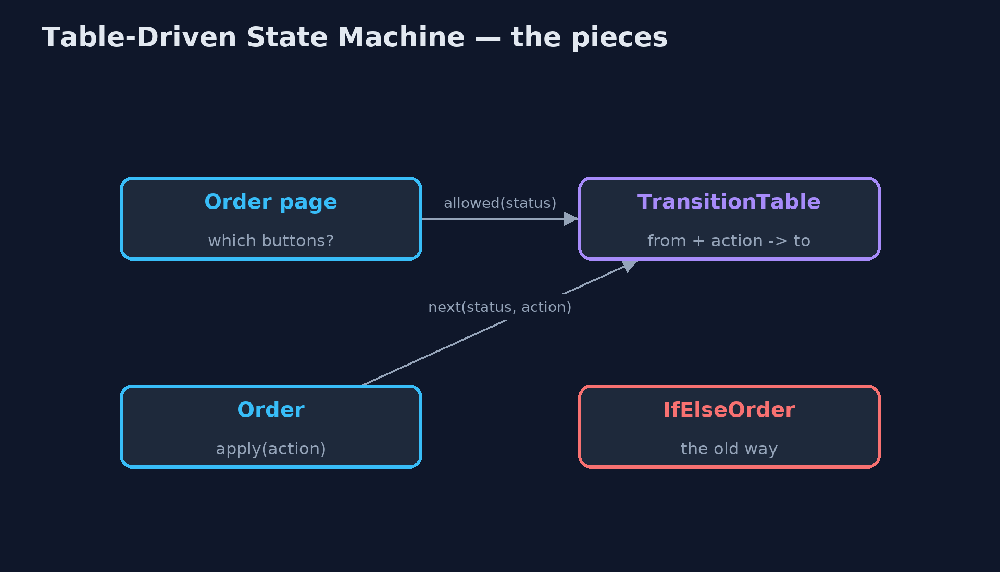
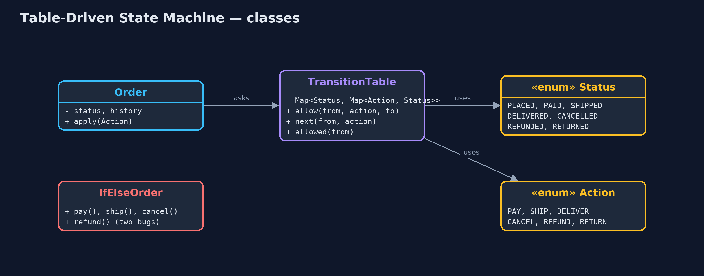
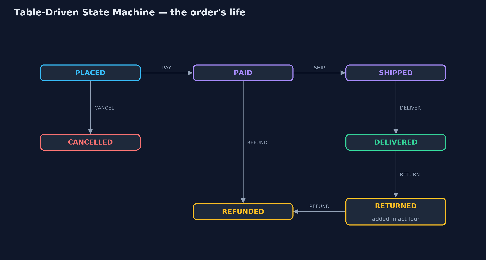
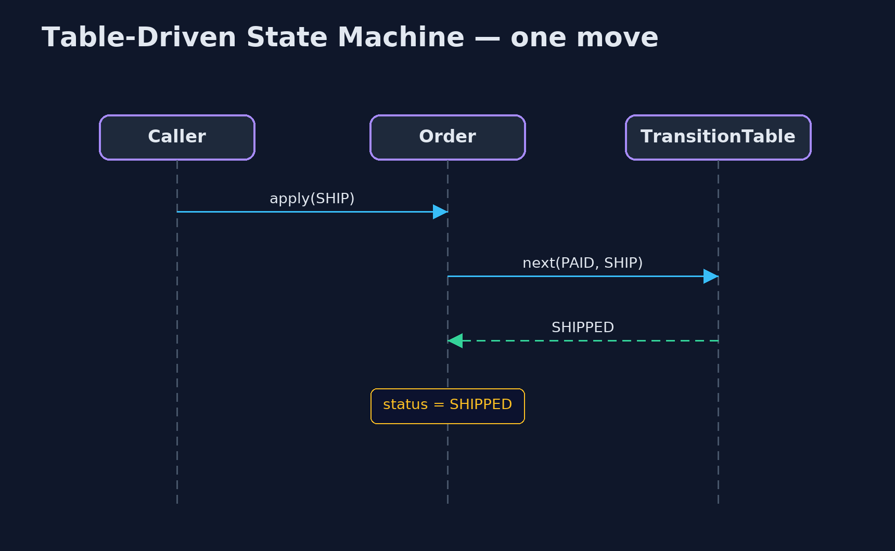

Table-Driven State Machine Pattern
src/main/java/com/jk/explore/statetable/
├── Action.java What can happen to an order: each one may move it to another status
├── IfElseOrder.java Without the pattern: each method checks the status its own way
├── Order.java An order whose status only changes by looking the move up in the table
├── StateTableDemo.java The five acts: rules scattered in ifs, the table, wrong moves refused, a new rule, and the bill
├── Status.java Where an order can be in its life
└── TransitionTable.java The pattern: every allowed move, in one tableWrite down every allowed move as a row in one table, from this status on this action to that status, and refuse anything that is not in it.
A state machine is anything that is always in exactly one of a few statuses, and moves between them when something happens. An order is one: placed, paid, shipped, delivered. A table-driven state machine keeps every allowed move in one table: from this status, on this action, go to that status. The code that changes the status just looks the move up. If it is not in the table, it is refused.
The rules stop being scattered across if statements in many methods, where a forgotten check is invisible. They sit in one place, where they can be read, printed, tested and changed.
The idea in everyday terms
Think of an airport. You go from check-in to security, from security to the gate, from the gate onto the plane. Imagine if every desk kept its own idea of what may come next, and one of them forgot to check you had been through security. Instead, the airport has one chart of allowed steps, and every desk checks it. A step that is not on the chart does not happen, however politely you ask.
The scenario
Orders in the online store move through placed, paid, shipped and delivered, and can be cancelled or refunded. Each method (pay, ship, cancel, refund) checked the status in its own way. Two checks were forgotten: a delivered order could be cancelled, and an order could be refunded twice.
Run
./gradlew runThe demo tells the story in 5 acts, each printing exact numbers that the tests check:
| Act | What it shows |
|---|---|
| 1. Rules in if statements | Each method checks the status its own way: a delivered order can be cancelled, and an order is refunded twice, £63.44 each time. |
| 2. The table | Five rows say every allowed move; ORD-1 goes PLACED, PAID, SHIPPED, DELIVERED by looking each one up. |
| 3. Wrong moves refused | Cancelling a DELIVERED order and refunding a REFUNDED one are refused by name; a PAID order's buttons are SHIP and REFUND. |
| 4. A new rule | Returns are added with 2 rows; a delivered order's buttons become RETURN, and ORD-1 is returned and refunded. |
| 5. The bill | 7 statuses x 6 actions is 42 cells, 7 of them allowed moves; paying refunds and sending emails are still code. |
Test
./gradlew test11 tests in DemoRunsTest, TransitionTableTest. Every number the demo prints is asserted, and nothing depends on the clock, so every run gives the same result.
Technologies and versions
| Technology | Version | Used for |
|---|---|---|
| Java | 21 | the code (toolchain set in build.gradle) |
| Gradle | 9.2.1 (wrapper) | build and run, nothing to install |
| JUnit | 5.10.2 | the tests |
| videokit | repository tool | the narrated video and animation: Piper en_US-amy-medium, speed 0.8, longer pauses (the approved amy-slow voice) |
Learning Material
| Document | What it is for |
|---|---|
| Problem statement | the situation and what the project must show |
| Prerequisites | what you need to know first |
| Table-Driven State Machine, explained | the acts in prose |
| Session guide | a one-hour lesson with exercises |
| Animated walkthrough | the acts step by step, narrated |
| Spec | what this project must be true of |
The pattern in one picture
The order and the page both ask the table; the rules live nowhere else.

Where each piece sits
Two enums and one map hold the rules.

How the data moves
Each arrow is one row of the table, labelled with its action.

Who calls whom, in order
The order asks the table; the table answers with the next status or nothing.

Video
video/table-driven-state-machine-pattern-explained.mp4 (with .m4a audio and .srt subtitles) is built by video/build_video.sh. Rendered media is not committed.
What it costs
- Where, not what. The table says which moves are allowed. Paying the refund and sending the email are still code, attached to the moves.
- Big tables are hard to read. Seven statuses and six actions make 42 cells; draw it as a diagram once it grows.
- Conditions need more. A rule such as "refund only within 30 days" is not a plain cell; it needs a check attached to the move.
When this is too much
An object with two statuses, such as on and off, needs a boolean, not a table. And when each status has a lot of its own behaviour, not just different next statuses, the classic State pattern, one class per status, may fit better.
Where you have already met this
- Spring State Machine and similar libraries configure transitions as a table.
- Workflow and ticket systems such as Jira, where an admin edits the allowed transitions.
- Order, payment and shipment statuses in almost every shop.
- Parsers and network protocols, which are built on state tables.
Where this sits
This project is in behavioural, next to the State pattern, which gives each status its own class. The table is the simpler choice when statuses differ mainly in where they can go next.